Produkcja ręcznych narzędzi ogrodowych
Narzędzie, które na półce wygląda prosto, jest efektem siedmiu bramek kontrolnych i dziewięciu rodzin materiałów, zapakowanym i wysłanym według przepisów zmieniających się wraz z krajem przeznaczenia. Ten artykuł opisuje tę drogę w kategoriach publicznych. Nie zawiera żadnego rysunku, specyfikacji ani zapisu programu klienta.
1 Hala produkcyjna
Jedna lokalizacja od 1974 roku — ta sama biblioteka oprzyrządowania i ta sama praktyka hartowania, i to właśnie sprawia, że reszta tej strony jest konkretna, a nie ogólnikowa.
Cała reszta tej strony opisuje drogę produkcji. Ta sekcja dotyczy miejsca, przez które ta droga biegnie, bo opis procesu wart jest lektury tylko wtedy, gdy zakład za nim stojący istnieje naprawdę.
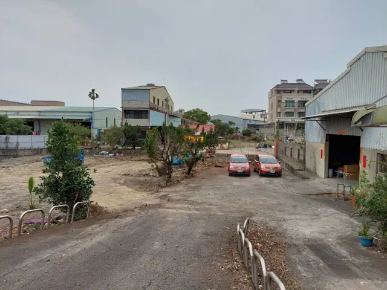
1.1 Gdzie się zaczęło, w 1974 roku
Birdland zaczął w tym miejscu w 1974 roku i ponad pięćdziesiąt lat później nadal tu produkuje, magazynuje i stąd wysyła. To nie jest biuro zakupowe otwarte po to, by firmować cudzy łańcuch dostaw, ani zakład, do którego wprowadziliśmy się później — to pierwotna fabryka.
Ta ciągłość jest powodem, dla którego reszta tej strony może być konkretna. Pięćdziesiąt lat w jednym miejscu to pięćdziesiąt lat tej samej biblioteki oprzyrządowania, tej samej praktyki hartowania i tych samych ludzi poprawiających się nawzajem — a tym właśnie jest w istocie punkt kontrolny.
2 Katalog
Archiwum sprzed dekady, publikowane ze względu na zakres, a nie jako cennik. Nic w nim nie jest aktualną ofertą.
Birdland prowadzi katalog produktów sprzed mniej więcej dekady. Publikujemy go jako archiwum, a nie jako cennik: zawarte w nim pozycje nie są aktualnymi ofertami i niczego w nim nie należy czytać jako oferty handlowej. Warto go przejrzeć z jednego powodu — dla zakresu.
- Każda pozycja została zatwierdzona przez klienta, dla którego powstała. Nic w nim nie jest koncepcją, renderem ani propozycją. Każdy wyrób przeszedł zatwierdzenie po stronie klienta, zanim trafił do produkcji.
- Wszystko to praca ODM na oprzyrządowaniu należącym do Birdland. Matryce i formy stojące za tymi wyrobami są nasze. Dlatego pozycja z tego katalogu zachowuje się inaczej niż nowy projekt: narzędzie już istnieje, więc koszt jest znany i stabilny, a nie szacowany wobec oprzyrządowania, którego nikt jeszcze nie wykonał.
- To własne oprzyrządowanie chroni marżę. Kupujący, który wprowadza na rynek istniejącą pozycję, nie amortyzuje nowego oprzyrządowania i nie jest narażony na dryf kosztów towarzyszący jego dochodzeniu do powtarzalności.
- Jego celem jest dowód, a nie wybór asortymentu. Proszę czytać go jako nagromadzone doświadczenie produkcyjne i jakościowe stojące za siedmioma bramkami opisanymi niżej — zakres, który ta hala rzeczywiście utrzymała w specyfikacji przez dziesięciolecia.
Jeśli coś w nim jest bliskie temu, czego Państwo potrzebują, wyjście od tej pozycji jest zwykle najszybszą i najtańszą drogą. Jeśli nie, to samo doświadczenie opisuje reszta tego artykułu.
Plik otwiera się w nowej karcie. To archiwum: proszę użyć go do oceny zakresu i możliwości, a przed uznaniem czegokolwiek za dostępne — zapytać nas.
3 Ścieżki OEM
Trzy ścieżki: nasze oprzyrządowanie, Państwa rysunek albo wspólne opracowanie. Różnica polega na tym, kto jest właścicielem oprzyrządowania i kto ponosi ryzyko.
OEM to nie jedna rzecz. Niemal każdy program mieści się na jednym z dwóch poziomów, a pierwsze użyteczne pytanie nie brzmi, ile to będzie kosztować, lecz na którym poziomie Państwo pracują. Ta odpowiedź porusza jednocześnie oprzyrządowanie, czas realizacji i wielkość zamówienia.
3.1 OEM specyfikacyjny
Kształt już istnieje. Zmieniają Państwo to, z czego jest zrobiony. Geometria została sprawdzona w produkcji, więc zmienia się gatunek materiału, przedział twardości, obróbka powierzchni, tworzywo uchwytu, kolor, znakowanie i opakowanie.
Nie powstaje żadne nowe oprzyrządowanie. Koszt wynika z części, którą już kiedyś wykonano, a nie z szacunku wobec takiej, której nikt nie robił; próbki liczy się w tygodniach, a zamówienie może być mniejsze, bo nie ma inwestycji w oprzyrządowanie do rozłożenia.
Najpłytsza wersja tej ścieżki nie zmienia w wyrobie nic — tylko markę, znakowanie i opakowanie. To najszybszy sposób, by postawić na półce serię pod własną nazwą. Ścieżka ta opiera się na oprzyrządowaniu opisanym w katalogu: naszym i dawno zamortyzowanym.
3.2 OEM projektowy
Kształt wnoszą Państwo. Nowe matryce lub formy powstają według Państwa rysunku i otwarte są wszystkie dźwignie, łącznie z samą geometrią.
Tę inwestycję trzeba rozłożyć, więc zamówienie jest większe, a próbki liczy się w miesiącach, nie w tygodniach. W zamian otrzymują Państwo wyrób, którego nikt inny nie może zamówić, i oprzyrządowanie istniejące wyłącznie dla Państwa programu.
Większość kupujących zakłada, że potrzebuje tej ścieżki. Wielu nie potrzebuje: warto sprawdzić, czy OEM specyfikacyjny nie obejmuje większości Państwa oczekiwań, zanim zdecydują się Państwo na nowe oprzyrządowanie. Wolimy powiedzieć to wcześnie, niż wycenić narzędzie, które nie było potrzebne.
3.3 Co pozwala zmienić każda ścieżka
| Dźwignia | OEM specyfikacyjny | OEM projektowy | Opisano w |
|---|---|---|---|
| Rodzina i gatunek materiału | Otwarta | Otwarta | Rodziny materiałów |
| Przedział twardości krawędzi roboczej | Otwarta | Otwarta | Obróbka cieplna |
| Obróbka powierzchni i kolor | Otwarta | Otwarta | Obróbka powierzchni |
| Tworzywo i chwyt uchwytu | Otwarta | Otwarta | Uchwyty i miękkie tworzywa |
| Znakowanie i marka | Otwarta | Otwarta | Obróbka powierzchni |
| Opakowanie i prezentacja handlowa | Otwarta | Otwarta | Opakowania |
| Sposób łączenia i elementy złączne | Ograniczone istniejącym oprzyrządowaniem | Otwarta | Łączenie i montaż |
| Wymiary i geometria | Ustalone przez istniejące oprzyrządowanie | Otwarta | Oprzyrządowanie |
| Wyłączność kształtu | Nie | Tak | 3.4 poniżej |
3.4 Jak ustala się oprzyrządowanie
Nie ma standardowej ceny oprzyrządowania ani jednej polityki własności, a każda strona, która by je opublikowała, wprowadzałaby Państwa w błąd. Ustala się to osobno dla każdego programu. Oto układy, które rzeczywiście się stosuje:
| Układ | Kto finansuje | Kto przechowuje | Zwykle łączony z |
|---|---|---|---|
| Istniejące oprzyrządowanie Birdland | Nie dotyczy | Birdland, już zamortyzowane | OEM specyfikacyjny |
| Finansowane przez klienta | Klient | Klient | Pełna wyłączność kształtu |
| Wspólne | Podzielone między obie strony | Przechowywane wspólnie | Ograniczenie rynkowe — zob. niżej |
| Finansowane przez Birdland | Birdland | Birdland | Zobowiązanie wolumenowe |
- Tam, gdzie oprzyrządowanie jest finansowane i przechowywane wspólnie, zwykle towarzyszy temu ograniczenie nałożone na nas: Birdland nie sprzedaje tego wyrobu na Państwa rynku. Oprzyrządowanie bywa wspólne; rynek nigdy.
- Ta klauzula to właśnie „nigdy nasza marka” zapisane w umowie, a nie na stronie startowej. Jest też powodem, dla którego dwie rzeczy na tej stronie do siebie pasują: katalogu może być pokazywany publicznie, bo tamto oprzyrządowanie jest nasze i nieobciążone, natomiast nic objętego ograniczeniem rynkowym w nim się nie pojawia i nigdy nie pojawi.
Co przesuwa granicę. W praktyce cztery rzeczy: złożoność części, staż naszej współpracy, warunki płatności i wolumen. Dlatego koszt oprzyrządowania, wielkość zamówienia i czas realizacji opisujemy tu wyłącznie w kategoriach względnych — realna liczba zależy od tych czterech czynników, a wartość opublikowana na publicznej stronie byłaby błędna dla większości czytelników i nieaktualna dla reszty.
Proszę podać wolumen, rynek i terminy, a układ da się pod nie ułożyć.
4 Ścieżka produkcji
Siedem bramek. Narzędzie jest tyle warte, co bramka, przez którą je przepuszczono.
Każda bramka przyjmuje określone wejście, trzyma pod kontrolą jedną rzecz i przekazuje część dalej. Ścieżki wymienione przy każdej bramce są alternatywami, a nie kolejnością: wybór między nimi jest tym, co naprawdę rozstrzyga specyfikacja.
Częstość to częstość występowania danego wariantu w ręcznych narzędziach ogrodowych sprzedawanych w europejskim i północnoamerykańskim detalu DIY. Koszt względny to jego koszt wobec alternatyw z tej samej grupy — pozycja, a nie cena. Obie skale są ocenami porządkowymi dotyczącymi tego kanału, a nie danymi rynkowymi.
4.1 Przyjęcie materiału
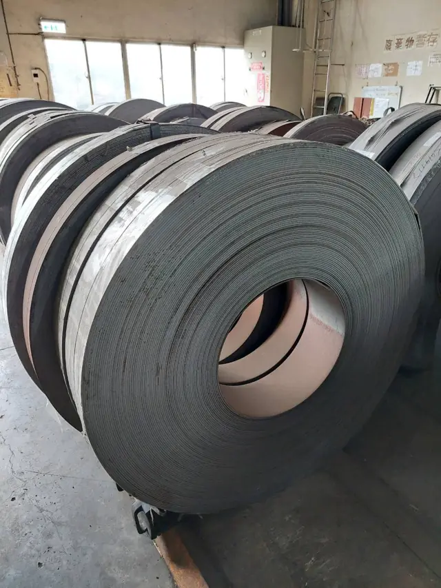
Nic dalej w procesie nie będzie lepsze niż to, co przyjedzie. Gatunek, grubość, stan obróbki i identyfikowalność ustala się tutaj, a zamiana dokonana na tej bramce po cichu zmienia twardość, odporność na korozję i zachowanie przy kształtowaniu na dalszym odcinku drogi.
- Co wchodzi
- Taśma i pręt stalowy, rura, tworzywo, kantówka drewniana, bele tkanin.
- Punkt kontrolny
- Wskazany materiał musi pasować do zamierzonej ścieżki kształtowania i do trwałości deklarowanej dla gotowego narzędzia.
- Kupujący powinien zapytać
- Która właściwość materiału jest krytyczna dla zamierzonego zastosowania: utrzymanie ostrza, odporność na korozję czy sztywność?
- WariantCzęstośćKoszt względnyDlaczego ma znaczenie
- Stal na ostrza i sprężynyWszędzieCzęstość 5 z 5ŚredniKoszt względny 3 z 5Podstawowy materiał każdej krawędzi tnącej; koszt średni
- Stal nierdzewnaCzęstoCzęstość 3 z 5Powyżej średniejKoszt względny 4 z 5Ostrza i łopatki premium odporne na rdzę; drożej niż stal węglowa
- AluminiumCzęstoCzęstość 3 z 5ŚredniKoszt względny 3 z 5Lekkie trzonki i głowice w liniach premium; koszt umiarkowany
- Tworzywa konstrukcyjneWszędzieCzęstość 5 z 5NiskiKoszt względny 1 z 5Dominują w rękojeściach i obudowach; najtańszy materiał konstrukcyjny
- Tworzywa uchwytówWszędzieCzęstość 5 z 5Poniżej średniejKoszt względny 2 z 5Miękki uchwyt nakładany to dziś standardowy argument ergonomiczny
- DrewnoSporadycznieCzęstość 2 z 5ŚredniKoszt względny 3 z 5Tradycyjny materiał trzonków do szpadli i wideł; drożej niż tworzywo
- TkaninaSporadycznieCzęstość 2 z 5NiskiKoszt względny 1 z 5Tylko rękawice i pasy; niski koszt, kilka indeksów
4.2 Kształtowanie i formowanie
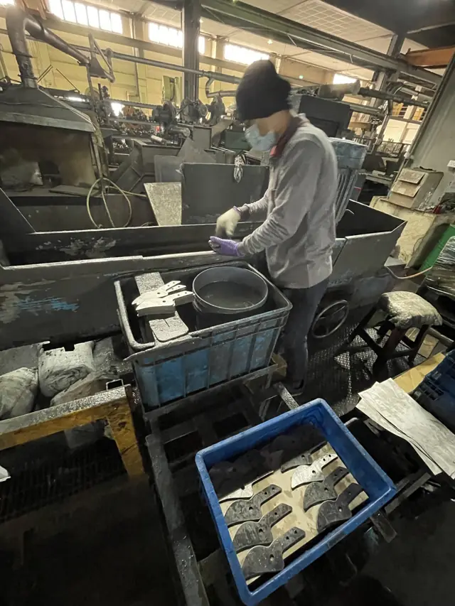
„Kształtowanie” to nie jedna operacja. Ostrze można wytłoczyć z taśmy, wykuć na gorąco dla przebiegu włókien albo wyciąć laserem dla niskonakładowego profilu, a każda z tych dróg daje inny stan krawędzi, inne pole tolerancji i inny koszt oprzyrządowania.
- Co wchodzi
- Przygotowany metal, zatwierdzony profil i utrzymany komplet matryc.
- Punkt kontrolny
- Siła prasy, kolejność uderzeń i luz matrycy decydują o tym, czy sztuka pierwsza i pięćdziesięciotysięczna są tą samą częścią.
- Kupujący powinien zapytać
- Który pojedynczy wymiar albo stan krawędzi ma największe znaczenie dla gotowego narzędzia?
- WariantCzęstośćKoszt względnyDlaczego ma znaczenie
- TłoczenieWszędzieCzęstość 5 z 5NiskiKoszt względny 1 z 5domyślne rozwiązanie dla ostrzy i wsporników w dużych seriach
- Kucie na gorącoSporadycznieCzęstość 2 z 5Powyżej średniejKoszt względny 4 z 5Cięższe głowice narzędzi; drożej i rzadziej w masowym DIY
- Kucie na zimnoSporadycznieCzęstość 2 z 5ŚredniKoszt względny 3 z 5Drobne części o wyższej wytrzymałości, np. sworznie osi; umiarkowany koszt dodatkowy
- Cięcie laseremSporadycznieCzęstość 2 z 5Powyżej średniejKoszt względny 4 z 5Krótkie serie albo profile ostrzy premium; kosztowne w przeliczeniu na sztukę
- Ciągnienie rurCzęstoCzęstość 3 z 5ŚredniKoszt względny 3 z 5Trzonki wideł, szpadli i nożyc do gałęzi; koszt umiarkowany, dość powszechne
- Gięcie rurCzęstoCzęstość 3 z 5Poniżej średniejKoszt względny 2 z 5Gnie rurę katalogową w rękojeści i ramy; taniej niż ciągnienie
- Zakuwanie końcówSporadycznieCzęstość 2 z 5Poniżej średniejKoszt względny 2 z 5Zwęża albo łączy końce rur; niszowy, tani krok kształtowania
- Toczenie drewnaSporadycznieCzęstość 2 z 5ŚredniKoszt względny 3 z 5Toczone trzonki drewniane do linii tradycyjnych; drożej niż wtrysk
- Formowanie wtryskoweWszędzieCzęstość 5 z 5Poniżej średniejKoszt względny 2 z 5Dominujący proces dla rękojeści i obudów z tworzyw; niski koszt jednostkowy
- Wtrysk dwukomponentowyPowszechnieCzęstość 4 z 5Powyżej średniejKoszt względny 4 z 5Częsty w rękojeściach z miękkim chwytem; oprzyrządowanie droższe niż przy wtrysku jednokomponentowym
- Powlekanie zanurzenioweCzęstoCzęstość 3 z 5Poniżej średniejKoszt względny 2 z 5Zanurza końce narzędzia, by powlec rękojeść; proces prosty i dość tani
4.3 Obróbka cieplna
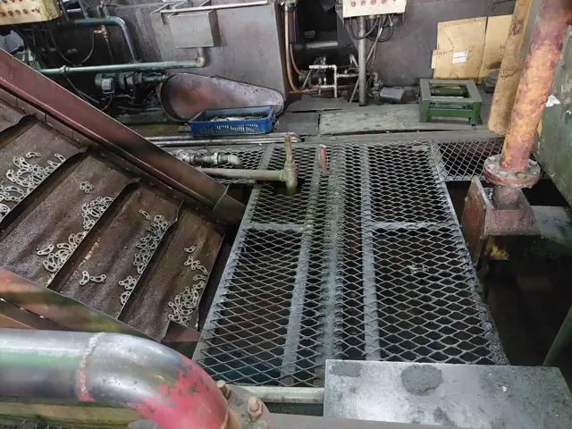
Twardość powstaje tutaj, nie kupuje się jej. Ta sama stal może opuścić tę bramkę miękka i ciągliwa albo twarda i krucha, dlatego twardość podaje się jako przedział, a nie jako wartość maksymalną. Hartowanie miejscowe obejmuje wyłącznie krawędź roboczą i zostawia korpus ciągliwym.
- Co wchodzi
- Ukształtowane części stalowe i określony przedział twardości.
- Punkt kontrolny
- Temperatura, szybkość chłodzenia i odpuszczanie ustalają twardość, udarność i wielkość odkształcenia części.
- Kupujący powinien zapytać
- Jakiego przedziału twardości potrzebuje krawędź robocza i co się za to oddaje?
- WariantCzęstośćKoszt względnyDlaczego ma znaczenie
- Hartowanie na wskrośCzęstoCzęstość 3 z 5Poniżej średniejKoszt względny 2 z 5Hartuje pełne części stalowe, np. ostrza łopatek; proste i tanie
- Hartowanie i odpuszczaniePowszechnieCzęstość 4 z 5Poniżej średniejKoszt względny 2 z 5Standardowa obróbka ostrzy i sprężyn ze stali sprężynowej; niski koszt
- Hartowanie indukcyjne (miejscowe)CzęstoCzęstość 3 z 5ŚredniKoszt względny 3 z 5Hartuje wyłącznie krawędź tnącą; wymaga osobnego wyposażenia, koszt umiarkowany
- PrzesycanieRzadkoCzęstość 1 z 5ŚredniKoszt względny 3 z 5Obróbka cieplna właściwa stali nierdzewnej; rzadka poza liniami premium z nierdzewki
- OdprężanieSporadycznieCzęstość 2 z 5NiskiKoszt względny 1 z 5Zmniejsza wypaczenia po kształtowaniu; tani, okazjonalny dodatkowy krok
- Sortowanie na przedziały twardościSporadycznieCzęstość 2 z 5NiskiKoszt względny 1 z 5Dzieli produkcję według klas twardości; tani krok kontroli, nie wszędzie stosowany
4.4 Oprzyrządowanie
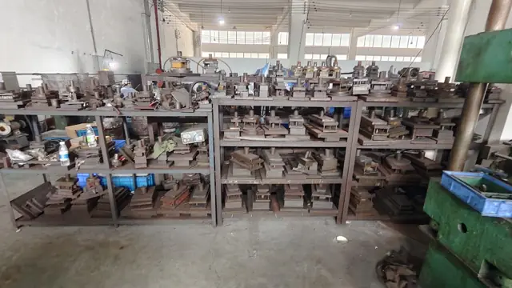
Oprzyrządowanie to ta część programu, której kupujący nigdy nie widzi i za którą zawsze płaci. Zużyta matryca nie psuje się głośno: ona dryfuje, a dryf objawia się jako wymiar powoli wychodzący poza tolerancję w trakcie serii.
- Co wchodzi
- Zatwierdzona geometria oraz matryce i przyrządy utrzymywane w znanym stanie.
- Punkt kontrolny
- To stan oprzyrządowania i odstęp między przeglądami utrzymują powtarzalną geometrię przez długą serię.
- Kupujący powinien zapytać
- Która cecha zależy bardziej od powtarzalności oprzyrządowania niż od umiejętności operatora?
- WariantCzęstośćKoszt względnyDlaczego ma znaczenie
- Matryce postępowePowszechnieCzęstość 4 z 5Powyżej średniejKoszt względny 4 z 5Oprzyrządowanie do tłoczenia wielkoseryjnego; droga inwestycja, częsta u dużych marek
- Matryce jednostanowiskoweCzęstoCzęstość 3 z 5Poniżej średniejKoszt względny 2 z 5Proste oprzyrządowanie do małych serii tłoczenia; taniej niż matryce postępowe
- Przyrządy do okrawania i przebijaniaCzęstoCzęstość 3 z 5Poniżej średniejKoszt względny 2 z 5Wtórne operacje tłoczenia; umiarkowany koszt oprzyrządowania, dość powszechne
- Formy wtryskoweWszędzieCzęstość 5 z 5WysokiKoszt względny 5 z 5Potrzebne do każdej części z tworzywa; najdroższa kategoria oprzyrządowania
- Przyrządy spawalniczeSporadycznieCzęstość 2 z 5NiskiKoszt względny 1 z 5Proste przyrządy do zespołów spawanych; tanie, używane tylko okazjonalnie
- Przyrządy montażoweCzęstoCzęstość 3 z 5NiskiKoszt względny 1 z 5Utrzymują spójny montaż na wszystkich liniach; niski koszt jednostkowy
- SprawdzianyCzęstoCzęstość 3 z 5NiskiKoszt względny 1 z 5Oprzyrządowanie kontrolne do wymiarów; tanie, umiarkowanie powszechne na liniach
4.5 Łączenie i montaż
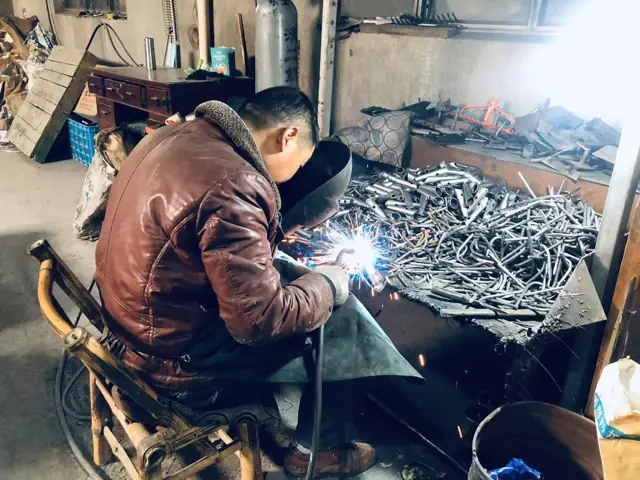
Większość awarii narzędzi ręcznych w terenie to awarie połączeń, a nie materiału. Oś sekatora przenosi całe obciążenie cięcia, a sposób jej połączenia decyduje o tym, czy narzędzie pozostanie osiowane po dziesięciu tysiącach cięć.
- Co wchodzi
- Przygotowane komponenty, elementy połączenia i uzgodniona kolejność montażu.
- Punkt kontrolny
- Pasowanie, ilość wprowadzonego ciepła i kolejność muszą chronić osiowanie oraz drogę przenoszenia obciążenia przez połączenie.
- Kupujący powinien zapytać
- Które połączenie przenosi obciążenie, a które odpowiada za osiowanie?
- WariantCzęstośćKoszt względnyDlaczego ma znaczenie
- NitowanieWszędzieCzęstość 5 z 5NiskiKoszt względny 1 z 5Standardowe połączenie osi w nożycach i sekatorach; tanie i powszechne
- Połączenia śruboweCzęstoCzęstość 3 z 5Poniżej średniejKoszt względny 2 z 5Regulowane osie albo mocowanie rękojeści; drożej niż nitowanie
- ZatrzaskPowszechnieCzęstość 4 z 5NiskiKoszt względny 1 z 5Obudowy z tworzywa zatrzaskują się wzajemnie; tanie, bardzo częste w narzędziach masowych
- WciskanieCzęstoCzęstość 3 z 5NiskiKoszt względny 1 z 5Tulejka na trzonek albo na trzpień ostrza; tania, powszechna metoda montażu
- Zgrzewanie punktoweSporadycznieCzęstość 2 z 5Poniżej średniejKoszt względny 2 z 5Łączy metalowe zespoły ram; koszt umiarkowany, rzadziej w narzędziach ręcznych
- Spawanie MIGSporadycznieCzęstość 2 z 5ŚredniKoszt względny 3 z 5Spawa cięższe zespoły narzędzi długotrzonkowych; drożej niż zgrzewanie punktowe
- Lutowanie twardeRzadkoCzęstość 1 z 5Powyżej średniejKoszt względny 4 z 5Połączenia ostrza z trzpieniem w wyrobach premium; rzadkie i drogie w kanale masowym
- Połączenia zalewane tworzywemPowszechnieCzęstość 4 z 5ŚredniKoszt względny 3 z 5Łączy miękki chwyt z korpusem rękojeści; częste w ergonomicznych liniach średnich
- KlejenieCzęstoCzęstość 3 z 5Poniżej średniejKoszt względny 2 z 5Skleja tulejki i etykiety; koszt umiarkowany, dość powszechny krok montażu
4.6 Obróbka powierzchni
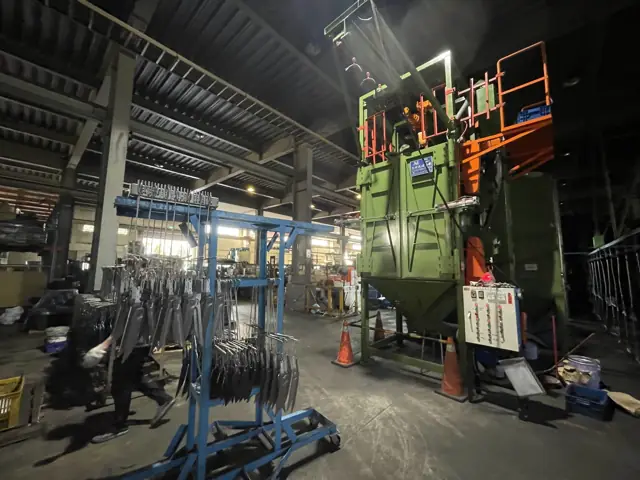
Powłoka ochronna to układ warstw, a nie kolor. Przygotowanie, warstwa ochronna i lakier nawierzchniowy to trzy odrębne koszty i trzy odrębne punkty kontrolne, a odporność w komorze solnej daje cały układ, a nie widoczna warstwa wierzchnia.
- Co wchodzi
- Oczyszczona, przygotowana powierzchnia i określona ścieżka obróbki.
- Punkt kontrolny
- Przygotowanie, pokrycie w narożnikach i utwardzenie muszą odpowiadać warunkom, w jakich narzędzie faktycznie będzie pracować.
- Kupujący powinien zapytać
- W jakim środowisku i przez jaki okres wyrób będzie użytkowany — i przez ile godzin ma temu opierać?
- WariantCzęstośćKoszt względnyDlaczego ma znaczenie
- Cynkowanie galwaniczneWszędzieCzęstość 5 z 5NiskiKoszt względny 1 z 5Domyślna, tania ochrona przed rdzą dla drobnych części stalowych i ostrzy
- Chromowanie na podkładzie niklowymSporadycznieCzęstość 2 z 5Powyżej średniejKoszt względny 4 z 5Dekoracyjne wykończenie premium; drożej, głównie w wyższych liniach
- DacrometRzadkoCzęstość 1 z 5Powyżej średniejKoszt względny 4 z 5Specjalistyczna powłoka antykorozyjna; rzadka w konsumenckich narzędziach ogrodowych, kosztowna
- Malowanie proszkowePowszechnieCzęstość 4 z 5Poniżej średniejKoszt względny 2 z 5Trwałe wykończenie kolorystyczne głowic metalowych; koszt umiarkowany, dość powszechne
- Malowanie mokreCzęstoCzęstość 3 z 5NiskiKoszt względny 1 z 5Tania powłoka kolorystyczna w tańszych seriach; mniej trwała niż proszkowa
- KataforezaRzadkoCzęstość 1 z 5ŚredniKoszt względny 3 z 5Podkład nakładany elektroforetycznie; rzadki w narzędziach ręcznych, raczej proces motoryzacyjny
- AnodowanieSporadycznieCzęstość 2 z 5ŚredniKoszt względny 3 z 5Barwi i chroni części aluminiowe; drożej niż zwykła farba
- PolerowanieCzęstoCzęstość 3 z 5Poniżej średniejKoszt względny 2 z 5Błyszczące wykończenie ostrza pod półkę sklepową; umiarkowany koszt robocizny
- PiaskowanieSporadycznieCzęstość 2 z 5NiskiKoszt względny 1 z 5Przygotowanie powierzchni przed powlekaniem; tani krok, nie w każdym indeksie
- Lakier lub olej na drewnieSporadycznieCzęstość 2 z 5NiskiKoszt względny 1 z 5Wykończenie wyłącznie trzonków drewnianych; tanie, istotne przy indeksach drewnianych
- Nadruk termotransferowyCzęstoCzęstość 3 z 5NiskiKoszt względny 1 z 5Tanie znakowanie i grafika na rękojeściach z tworzywa; dość powszechne
- Znakowanie laseroweCzęstoCzęstość 3 z 5Poniżej średniejKoszt względny 2 z 5Trwałe znakowanie ostrza; koszt umiarkowany, częste w liniach premium
4.7 Kontrola i zwolnienie
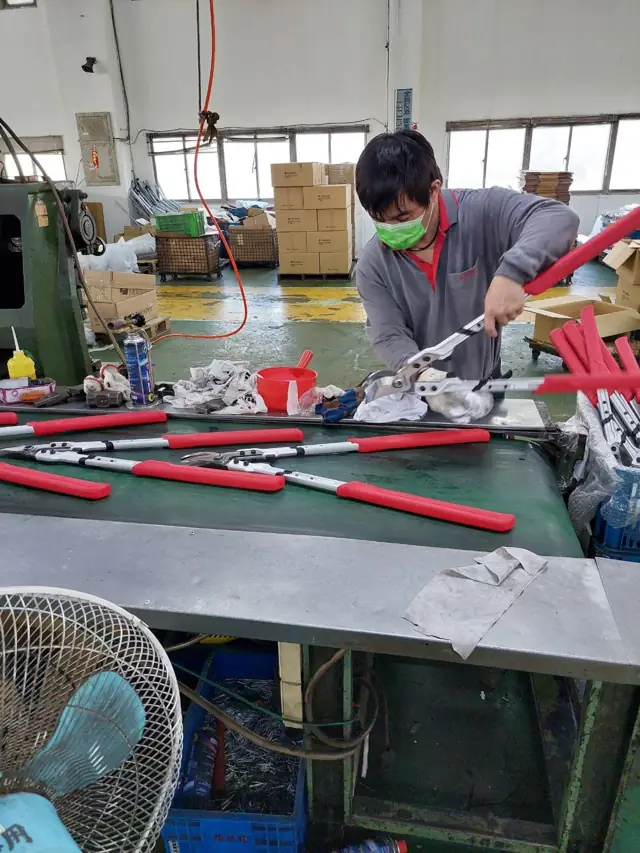
Ostatnia bramka jest jedyną, którą kupujący może skontrolować po fakcie. Przebiega w trzech etapach, a nie w jednym — kontrola pierwszej sztuki względem rysunku, zanim seria ruszy dalej, kontrole w trakcie samej serii oraz plan poboru próbek względem gotowej palety — a zapis zwolnienia z każdego etapu zamienia dostawę w dające się obronić przekazanie handlowe, a nie w słowo dostawcy. Trzy etapy opisano w całości w następnej sekcji, Kontrola jakości i badania.
- Co wchodzi
- Wyroby gotowe, wymagania opakowaniowe i uzgodnione punkty kontroli.
- Punkt kontrolny
- Plan poboru próbek i kryteria zwolnienia trzeba uzgodnić przed produkcją, a nie po odrzuceniu partii.
- Kupujący powinien zapytać
- Co należy zweryfikować przed zwolnieniem i kto to podpisuje?
- WariantCzęstośćKoszt względnyDlaczego ma znaczenie
- Kontrola pierwszej sztuki (FAI)PowszechnieCzęstość 4 z 5NiskiKoszt względny 1 z 5Kontrola pierwszej sztuki względem rysunku, zanim seria ruszy dalej; tania i niemal powszechna przy nowym oprzyrządowaniu albo nowej formie
- Kontrola twardości na próbkachCzęstoCzęstość 3 z 5NiskiKoszt względny 1 z 5Kontrola twardości ostrza w partii; tani, rutynowy pobór próbek
- Trwałość cykli otwarcia i zamknięciaSporadycznieCzęstość 2 z 5Poniżej średniejKoszt względny 2 z 5Badanie trwałości osi nożyc i nożyc do gałęzi; umiarkowany koszt dodatkowy
- Godziny w komorze solnejSporadycznieCzęstość 2 z 5Poniżej średniejKoszt względny 2 z 5Badanie korozyjne części powlekanych; koszt umiarkowany, nie w każdym indeksie
- Wymiarowy AQLPowszechnieCzęstość 4 z 5NiskiKoszt względny 1 z 5Standardowa kontrola wymiarów na wejściu i wyjściu; tania i powszechna
- Kontrola ostrza i działaniaWszędzieCzęstość 5 z 5NiskiKoszt względny 1 z 5Niemal powszechna kontrola ostrości i działania przed pakowaniem; niski koszt
- Próba wyrywania połączeniaSporadycznieCzęstość 2 z 5Poniżej średniejKoszt względny 2 z 5Badanie niszczące połączeń nitowanych lub śrubowych; okazjonalne, koszt umiarkowany
- Próba zrzutu opakowaniaCzęstoCzęstość 3 z 5NiskiKoszt względny 1 z 5Standardowe badanie transportowe opakowań detalicznych; tanie i powszechne
- Kontrola kodu kreskowego i etykietyWszędzieCzęstość 5 z 5NiskiKoszt względny 1 z 5Obowiązkowe skanowanie zgodności dla sieci handlowej; tanie, na każdej sztuce
- Punkty kontrolne SPC na liniiSporadycznieCzęstość 2 z 5Poniżej średniejKoszt względny 2 z 5Pobór próbek statystycznych w trakcie samej serii, nie tylko na końcu; koszt umiarkowany, częściej przy dłuższych programach
- Kontrola przez firmę zewnętrzną (SGS / Bureau Veritas / Intertek)CzęstoCzęstość 3 z 5Poniżej średniejKoszt względny 2 z 5Niezależny inspektor zamawia i raportuje kontrolę AQL; koszt umiarkowany, organizowana przez kupującego równie często jak przez fabrykę
5 Kontrola jakości i badania
Bramka kontroli wymienia badania. Ta sekcja pokazuje, co je faktycznie wykonuje i na którym z trzech etapów kupujący może być rzeczywiście obecny.
Poprzednia bramka wymieniła badania, których może zażądać specyfikacja. Sama lista nazw nie mówi jednak, gdzie one naprawdę się odbywają — na jakim wyposażeniu, w którym punkcie serii i co uruchamia niezaliczenie któregokolwiek z nich. To właśnie opisuje ta sekcja.
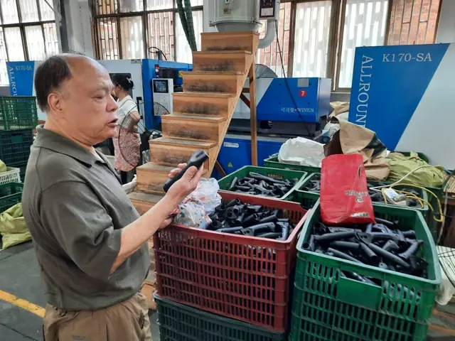
5.1 Badania własne
Ścieżka wymieniona na bramce kontroli jest warta tyle, ile to, co ją naprawdę wykonuje. Pięć z nich prowadzimy u siebie, na samej części, a nie na certyfikacie surowca, z którego powstała:
5.2 Etapy kontroli w trakcie serii
Jedna kontrola na końcu serii mówi kupującemu wyłącznie o tych paletach, z których akurat pobrano próbki. Trzy poniższe etapy to miejsca, w których te same badania są rzeczywiście stosowane, a każdy z nich to inna okazja, by kupujący zobaczył pracę, zamiast przyjmować raport na wiarę.
| Etap | Kiedy | Co jest sprawdzane | Kto może być obecny |
|---|---|---|---|
| Pierwsza sztuka (FAI) | Zanim ruszy zasadnicza część serii | Każdy wymiar i każda cecha względem zatwierdzonego rysunku, na pierwszych sztukach z nowego lub przerobionego oprzyrządowania | Kupujący albo jego inspektor, po uzgodnieniu |
| W trakcie procesu (DPI) | W odstępach w trakcie serii | Próbka bieżąca względem wymiarów krytycznych i przedziału twardości, by wychwycić dryf, zanim dotrze do palety | Zwykle wewnętrznie; przy długo trwającym programie może uczestniczyć inspektor kupującego |
| Przed wysyłką (PSI) | Względem gotowego, zapakowanego towaru | Próbka AQL względem pełnej specyfikacji — wymiary, działanie, wykończenie, twardość i opakowanie | Własny inspektor kupującego albo firma zewnętrzna (SGS, Bureau Veritas, Intertek), zamówiona przed datą wysyłki |
Dostawca, który oferuje tylko ostatni z tych trzech etapów, oferuje filtr, a nie kontrolę. Kontrola przed wysyłką wychwytuje złą paletę. Nie robi nic, by powstrzymać następną, bo seria, która ją wytworzyła, jest już zakończona, zanim ktokolwiek spojrzy.
5.3 Co uruchamia odrzucona partia
- Najpierw zatrzymanie
- Partia, której to dotyczy, zostaje wstrzymana w chwili, gdy badanie wypadnie negatywnie. Nic nie wyjeżdża w nadziei, że prawdopodobnie będzie dobrze.
- Przyczyna źródłowa, nie tylko przesortowanie
- Przesortowanie znajduje złe sztuki w tej partii. Przyczyna źródłowa wyjaśnia, dlaczego matryca zdryfowała, kąpiel wystygła albo pomieszano partie materiału — tak by następna partia nie niosła tej samej wady.
- Powtórna kontrola przed zwolnieniem
- Poprawiona albo przesortowana partia przechodzi to samo badanie, które ją odrzuciło, a nie łagodniejsze, zanim zostanie ponownie zwolniona.
Od każdego dostawcy proszę żądać: które z trzech etapów rzeczywiście prowadzą — pierwszą sztukę, kontrolę w trakcie procesu, kontrolę przed wysyłką, czy tylko tę ostatnią — czy inspektor kupującego może być obecny i co uruchamia odrzucona partia; wszystko na piśmie, przed pierwszym kontenerem, a nie po pierwszym odrzuceniu.
6 Rodziny materiałów
Dziewięć rodzin. Gatunek to zawsze kompromis, nigdy ulepszenie — każdy punkt twardości kupuje się udarnością.
Narzędzie ogrodowe rzadko powstaje z jednego materiału. Te dziewięć rodzin pokrywa program narzędzia ręcznego, a te same dziewięć śledzimy jako bieżące wsady w AsiaSource, więc gatunek omawiany tutaj można zestawić z tygodniowym ruchem cen.
Częstość to częstość występowania danego wariantu w ręcznych narzędziach ogrodowych sprzedawanych w europejskim i północnoamerykańskim detalu DIY. Koszt względny to jego koszt wobec alternatyw z tej samej grupy — pozycja, a nie cena. Obie skale są ocenami porządkowymi dotyczącymi tego kanału, a nie danymi rynkowymi.
6.1 Stal na ostrza i sprężyny
Gatunki węglowe i niskostopowe tanio przyjmują twardą krawędź, ale wymagają zabezpieczenia przed korozją. Hartowalne gatunki nierdzewne kosztują więcej za kilogram i całkowicie pomijają etap powlekania.
- Stosowana w
- Ostrza tnące, kowadełka, sprężyny, hartowane krawędzie robocze.
- Co porusza koszt
- Twardsze gatunki dłużej trzymają ostrze, ale są bardziej kruche i wolniej się je obrabia.
Najczęściej wskazywane gatunkiSK565Mn420J2SUS420J2SUS440C
- WariantCzęstośćKoszt względnyDlaczego ma znaczenie
- Stal na ostrza i sprężynyWszędzieCzęstość 5 z 5ŚredniKoszt względny 3 z 5Podstawowy materiał każdej krawędzi tnącej; koszt średni
6.2 Stal nierdzewna
Gatunek 304 najlepiej opiera się korozji, ale nie da się go hartować, więc jego miejsce jest w korpusach i elementach złącznych, a nie w krawędziach. Gatunki 410 i 420 dają się hartować i są zwykłym wyborem tam, gdzie krawędź musi dodatkowo znosić wilgoć.
- Stosowana w
- Części narażone na korozję, elementy złączne, podzespoły opryskiwaczy.
- Co porusza koszt
- Eliminuje operację powlekania, ale cena surowca za kilogram jest wyższa, a obróbka wolniejsza.
Najczęściej wskazywane gatunki304410420
- WariantCzęstośćKoszt względnyDlaczego ma znaczenie
- Stal nierdzewnaCzęstoCzęstość 3 z 5Powyżej średniejKoszt względny 4 z 5Ostrza i łopatki premium odporne na rdzę; drożej niż stal węglowa
6.3 Powłoki galwaniczne i lakiernicze
Powłokę określa się liczbą godzin odporności w komorze solnej, które ma zapewnić, a nie tym, jak grubo wygląda. To pokrycie we wnętrzu narożników i wokół osi obnaża tanią linię produkcyjną.
- Stosowana w
- Ochrona przed korozją i wygląd części ze stali węglowej.
- Co porusza koszt
- Zależy od grubości warstwy i wymaganych godzin w komorze solnej. Proszę określać godziny, a nie najgrubszy wariant.
Najczęściej wskazywane gatunkiCynkNikiel-chromDacrometPowłoka proszkowaKataforeza
- WariantCzęstośćKoszt względnyDlaczego ma znaczenie
- Powłoki galwaniczne i lakierniczeWszędzieCzęstość 5 z 5Poniżej średniejKoszt względny 2 z 5Niemal powszechna ochrona przed rdzą na częściach stalowych; niski koszt dodatkowy
6.4 Aluminium
To, co kupujący czuje w ręce, to zwykle grubość ścianki, a nie stop. Cieńsza ścianka jest lżejsza i tańsza, a pod obciążeniem bardziej się ugina, co ma znaczenie przy trzymetrowym drążku i nie ma go wcale przy krótkiej rękojeści.
- Stosowana w
- Drążki teleskopowe, lekkie ramy, lekkie rękojeści.
- Co porusza koszt
- 6061 jest mocniejszy; 6063 daje się wyciskać w drobniejsze profile. Cieńsza ścianka jest tańsza i mniej sztywna.
Najczęściej wskazywane gatunki60616063Grubość ściankiAnodowane
- WariantCzęstośćKoszt względnyDlaczego ma znaczenie
- AluminiumCzęstoCzęstość 3 z 5ŚredniKoszt względny 3 z 5Lekkie trzonki i głowice w liniach premium; koszt umiarkowany
6.5 Tworzywa konstrukcyjne
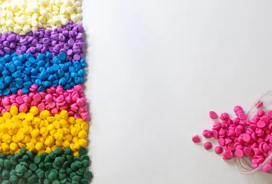
Wybór tworzywa ustala sztywność, zachowanie przy uderzeniu i sposób starzenia się części w słońcu. Poliamidę z włóknem szklanym wskazuje się tam, gdzie część z tworzywa musi przenosić realne obciążenie, jak koło zębate albo zatrzask.
- Stosowana w
- Obudowy, korpusy opryskiwaczy, elementy przekładni, sztywne rdzenie rękojeści.
- Co porusza koszt
- Napełniacz szklany podnosi sztywność, odporność cieplną i cenę. Tworzywo jest towarem giełdowym, więc oferty poruszają się razem z indeksem.
Najczęściej wskazywane gatunkiPPPEABSPAPA+GF
- WariantCzęstośćKoszt względnyDlaczego ma znaczenie
- Tworzywa konstrukcyjneWszędzieCzęstość 5 z 5NiskiKoszt względny 1 z 5Dominują w rękojeściach i obudowach; najtańszy materiał konstrukcyjny
6.6 Uchwyty i miękkie tworzywa
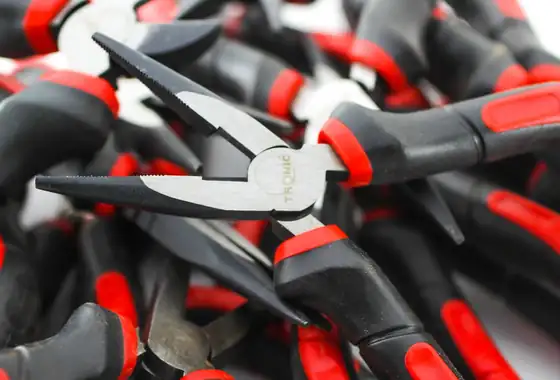
Uchwyt jest jedyną częścią narzędzia, którą użytkownik ocenia dotykiem. Miękka warstwa zaformowana na sztywnym rdzeniu sprawia wrażenie jednolitej; nasuwana tuleja albo powłoka zanurzeniowa kosztuje mniej i w użyciu może się obracać lub odchodzić.
- Stosowana w
- Rękojeści, uchwyty zaformowane, tuleje, amortyzowane strefy kontaktu.
- Co porusza koszt
- Wtrysk dwukomponentowy kosztuje więcej niż nasuwana tuleja albo powłoka zanurzeniowa.
Najczęściej wskazywane gatunkiTPRTPEKauczuk termoplastycznyPowłoka zanurzeniowa PVC
- WariantCzęstośćKoszt względnyDlaczego ma znaczenie
- Uchwyty i miękkie tworzywaWszędzieCzęstość 5 z 5Poniżej średniejKoszt względny 2 z 5Miękki uchwyt nakładany to dziś standardowy argument ergonomiczny
6.7 Drewno
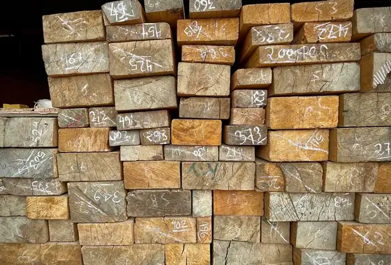
Kierunek włókien i wilgotność decydują o tym, czy drewniany trzonek przetrwa pierwszy ciężki sezon. Jesion pracuje sprężyście, buk obrabia się czysto, bambus jest laminatem o własnym zachowaniu.
- Stosowana w
- Drewniane rękojeści i trzonki.
- Co porusza koszt
- Certyfikowane drewno suszone komorowo kosztuje więcej. Klasa drewna wpływa na odsetek braków bardziej niż cena za sztukę.
Najczęściej wskazywane gatunkiBukJesionBambusDrewno FSC / PEFC
- WariantCzęstośćKoszt względnyDlaczego ma znaczenie
- DrewnoSporadycznieCzęstość 2 z 5ŚredniKoszt względny 3 z 5Tradycyjny materiał trzonków do szpadli i wideł; drożej niż tworzywo
6.8 Tkaniny i tekstylia
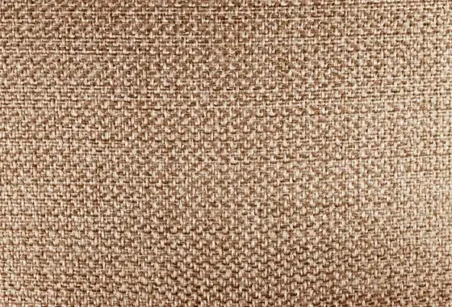
Elementy tekstylne pękają na szwach na długo przed zużyciem samej tkaniny, więc gęstość ściegu i konstrukcja szwu znaczą więcej niż nazwa tkaniny w opisie.
- Stosowana w
- Rękawice, torby, kamizelki, osłony i pokrowce.
- Co porusza koszt
- Denier, powlekanie i gęstość ściegu ustalają koszt. Powleczenie dodaje wodoodporności i ceny.
Najczęściej wskazywane gatunkiPłótnoPoliesterTkanina powlekanaSiatka
- WariantCzęstośćKoszt względnyDlaczego ma znaczenie
- Tkaniny i tekstyliaSporadycznieCzęstość 2 z 5NiskiKoszt względny 1 z 5Tylko rękawice i pasy; niski koszt, kilka indeksów
6.9 Tektura opakowaniowa
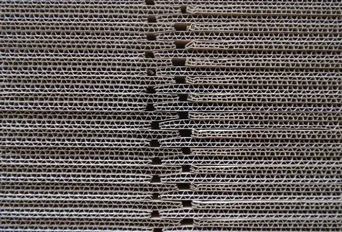
Tektura to materiał najczęściej zmieniany w ostatniej chwili i najczęściej odpowiedzialny za problem zgodności w kraju przeznaczenia. Poświęcamy jej osobną sekcję poniżej.
- Stosowana w
- Kartony eksportowe, pudełka kolorowe, zawieszki i wkłady.
- Co porusza koszt
- Udział surowca wtórnego i rozwiązania jednomateriałowe wpływają zarówno na cenę, jak i na zgodność w kraju przeznaczenia.
Najczęściej wskazywane gatunkiTektura falistaKarton składanyUdział surowca wtórnegoMasa formowana
- WariantCzęstośćKoszt względnyDlaczego ma znaczenie
- Tektura opakowaniowaWszędzieCzęstość 5 z 5NiskiKoszt względny 1 z 5Uniwersalna w kartonach i zawieszkach; najtańszy materiał opakowaniowy
7 Jak psuje się narzędzie
Twardość ustala się według tego, jak narzędzie ma się zepsuć: przez stępienie, pęknięcie albo zmęczenie. Trzy grupy, trzy przedziały, trzy różne odpowiedzi.
Twardość to liczba najczęściej przytaczana przy narzędziu ręcznym i najczęściej przytaczana błędnie. Nie jest oceną jakości, a twardsze nie znaczy lepsze — każdy punkt twardości kupuje się udarnością. O tej liczbie decyduje sposób, w jaki narzędzie ma ulec awarii.
Trzy grupy, trzy mechanizmy awarii, trzy różne odpowiedzi. Poniższe przedziały to te, według których pracuje Birdland; czytane obok siebie przestają wyglądać na dowolne.
7.1 Narzędzia, które tną — awarią jest stępienie
Sekator, który się stępił, zawiódł, choć nic się nie złamało. Utrzymanie ostrza jest tu najważniejsze, dlatego te wyroby pracują w najtwardszych przedziałach w całym zakładzie.
Przeciwostrze jest miększe celowo. Proszę przeczytać obie połowy tej tabeli jeszcze raz: ta sama stal SK5 jest podana jako 56–60 na ostrzu tnącym i 50–56 na ostrzu, o które się ono domyka. Dwa jednakowo twarde ostrza wyszczerbiają się nawzajem. Miększe przeciwostrze zużywa się ofiarnie i utrzymuje krawędź tnącą przy życiu — dlatego dwukrotnie ostrzony sekator nadal tnie, a „w pełni zahartowany” ma na ostrzu wyszczerbienie.
7.2 Narzędzia, które podważają — awarią jest pęknięcie
Szpadel trafia na kamienie, korzenie i zmarznięty grunt, a używa się go jak dźwigni niezależnie od tego, czy ktoś to przewidział. Jego mechanizmem awarii jest pęknięcie, a nie stępienie, więc twardość celowo się ogranicza: pióro ma się wygiąć, zanim pęknie.
Dwadzieścia punktów twardości poniżej ostrza sekatora, i to celowo. Szpadel o twardości HRC 58 trzymałby znakomite ostrze i pękłby przy pierwszym podważeniu korzenia.
Narzędzia do kopania pękają w szyjce, gdzie kumuluje się moment gnący — więc struktura w tym miejscu znaczy więcej niż sama stal. Kuta szyjka prowadzi ciągłe włókno wokół zagięcia; odlewana ma włókno przypadkowe, a każda porowatość staje się ogniskiem pęknięcia. To jedyne miejsce w narzędziu długotrzonkowym, w którym kucie zwraca swój koszt.
Trzonek rządzi się tą samą logiką, a specyfikacją najczęściej pozostawianą niedokończoną jest aluminium: rurę definiuje grubość ścianki i stan umocnienia, a nie średnica.
Trzonki: stan umocnienia, udział szkła i ich późniejszy koszt
6061-T6 jest wyraźnie mocniejszy niż ta sama rura w stanie T5. Rysunek, który podaje stop, ale nie stan umocnienia, nie określa niczego, a różnica ujawnia się przy pierwszym podważeniu trzymetrowym drążkiem.
Rdzeń z napełniaczem szklanym dobiera się tak samo. PA6-GF30 jest zwykłym kompromisem, bo powyżej tego udziału część przestaje się giąć, a zaczyna pękać, a w narzędziu konsumenckim rękojeść, która się odkształca, jest bezpieczniejsza niż taka, która pęka nagle. Szkło ściera też formę, więc wyższy udział po cichu skraca życie oprzyrządowania — koszt, który spada na drugie zamówienie, nie na pierwsze.
7.3 Narzędzia, które sprężynują — awarią jest zmęczenie
Od zęba grabi nigdy nie wymaga się cięcia i rzadko przeniesienia jednego dużego obciążenia. Wymaga się, by ugiął się i wrócił, tysiące razy. Liczy się granica sprężystości i trwałość zmęczeniowa, a nie utrzymanie ostrza.
Ząb, który pozostaje wygięty, zawiódł tak samo całkowicie jak ten, który pękł. 65Mn to stal sprężynowa, a jej obróbka cieplna nastawiona jest na powrót do kształtu, nie na twardość — ten sam gatunek pojawia się w sprężynie sekatora z tego samego powodu.
7.4 Trzy reguły zapisane w tych liczbach
- Przedział, nigdy wartość maksymalna
- Każda liczba na tej stronie jest przedziałem. Specyfikacja podająca wyłącznie górną granicę zachęca zakład, by do niej dobić, a szczyt przedziału to miejsce, w którym zaczyna się kruchość. Przedział ustala dół i górę jednocześnie.
- Twardo tylko tam, gdzie się ściera
- Zespół osi z 40Cr jest hartowany indukcyjnie na powierzchni łożyskowania i pozostawiony ciągliwy w rdzeniu. Sworzeń zahartowany na wskroś nie ściera się — on pęka.
- Nierdzewna to kompromis, nie ulepszenie
- 420J2 oddaje mniej więcej cztery do sześciu punktów wobec SK5 na tej samej pozycji. To właściwa odpowiedź przy pracy w wilgoci, w powietrzu nadmorskim i w flotach utrzymania terenów zieleni, które nigdy nie będą ostrzyć. To odpowiedź niewłaściwa przy profesjonalnym cięciu w suchym klimacie, a dostawca, który oferuje ją jako darmowe ulepszenie, nie wycenił ostrza, które Państwo tracą.
Od każdego dostawcy proszę żądać: przedziału twardości zamiast pojedynczej liczby, planu poboru próbek, który go potwierdza, oraz odpowiedzi, czy wynikowy raport jedzie razem z dostawą. Przedział bez planu poboru próbek za nim to zdanie, a nie kontrola.
Każdy gatunek powyżej to jedna z kilku ścieżek dla danej części. Pełny zestaw — 159 ścieżek materiałowych dla 38 typów części, wraz z odpowiadającymi im wariantami procesu i wykończenia — znajduje się w AsiaSource, albo proszę wpisać gatunek, np. SK5 lub 420J2 w Terminalu, by przejść prosto do niego.
8 Nakrętki, śruby i połączenie
Narzędzie ręczne psuje się na połączeniu częściej niż na ostrzu. To nakrętka decyduje, czy takie połączenie da się przywrócić do formy, czy trzeba je wyrzucić.
Każde narzędzie na tej stronie to co najmniej dwie części złożone razem. Ostrze dostaje specyfikację; element złączny dostaje to, co akurat leży w pojemniku. Dlatego sekator, którego ostrze wciąż przyjmuje ostrzenie, może być już skończony: oś się rozluźniła, a nie ma na niej czego dokręcić.
8.1 Oś decyduje, czy narzędzie da się naprawić
Jedna decyzja rządzi życiem wyrobu: czy użytkownik może ponownie napiąć połączenie, czy nie.
| Połączenie | Co je trzyma | Użytkownik może napiąć ponownie | Gdzie jest jego miejsce |
|---|---|---|---|
| Sworzeń nitowany lub zaklepany | Odkształcony łeb | Nie — wywiercenie go kończy życie narzędzia | Nożyce z najniższej półki, przy których nie przewiduje się serwisu |
| Śruba + nakrętka samohamowna z wkładką nylonową | Nylon obejmujący gwint | Tak, dwoma kluczami | Zwykła oś profesjonalnego sekatora |
| Śruba + nakrętka samohamowna całkowicie metalowa | Odkształcony wierzchołek gwintu | Tak, i znosi wielokrotne rozkręcanie | Mycie strumieniem, wysoka temperatura albo narzędzia rozbierane co sezon do ostrzenia |
| Śruba z podcięciem + nakrętka koronowa + zawleczka | Blokada mechaniczna | Tak, i w ogóle nie może się odkręcić | Nożyce do gałęzi i długie rękojeści, gdzie dźwignia jest duża |
| Nakrętka radełkowana lub motylkowa | Dokręcenie ręką | Tak, bez narzędzi | Narzędzia konsumenckie sprzedawane pod hasłem regulacji |
Nit to decyzja o życiu wyrobu, a nie o jego cenie. Oszczędza kilka centów i usuwa serwis, doostrzenie do prawdziwej krawędzi oraz jakikolwiek program części zamiennych. W narzędziu sprzedawanym jako naprawialne jest to sprzeczność, której opakowanie nie ukryje.
8.2 Zestaw podkładek robi więcej niż nakrętka
8.3 Z czego zrobione są elementy złączne
| Ścieżka | Jej miejsce jest w | Kompromis |
|---|---|---|
| Stal węglowa ocynkowana, klasa 8.8 | Ogólne zastosowanie w suchych warunkach | Najtańsza. O tym, jak długo wygląda jak nowa, decydują godziny powłoki, a nie stal |
| Nierdzewna A2 (304) | Praca w wilgoci; całkowicie pomija powlekanie | A2-70 to około 700 MPa wobec 800 dla klasy 8.8 — nierdzewna kupuje odporność na korozję, a nie wytrzymałość |
| Nierdzewna A4 (316) | Powietrze nadmorskie i floty przybrzeżne | Najwyższy koszt, ten sam kompromis wytrzymałościowy |
| Tulejka z brązu lub mosiądzu na osi | Narzędzia sprzedawane pod hasłem płynnej pracy | Zużywa się ofiarnie i chroni ostrze — część wymienna, o ile trzymają ją Państwo na stanie |
Element złączny proszę dobierać do rękojeści, a nie do ostrza. Nierdzewna śruba przechodząca przez aluminiowy drążek to małe ogniwo: aluminium jest anodą i koroduje na styku. „Ulepszenie na nierdzewkę” potrafi wrócić jako zatarte złącze teleskopowe po jednym sezonie nad morzem. Proszę odizolować je tulejką nylonową albo powlekanym elementem złącznym.
Gwinty, kleje zabezpieczające i normy, które warto przywołać
Gwinty walcowane biegną wzdłuż włókien materiału zamiast je przecinać, więc w dużych seriach są zarazem mocniejsze i tańsze; gwinty nacinane należą do napraw i pojedynczych sztuk. Tam, gdzie połączenie nigdy nie ma być otwierane, klej anaerobowy o średniej wytrzymałości wykona pracę nakrętki samohamownej taniej. Tam, gdzie regulacja jest argumentem sprzedażowym, jest to odpowiedź błędna: pierwsze ponowne napięcie zrywa spoinę i nic jej nie zastępuje.
Wkładka nylonowa jest materiałem eksploatacyjnym. Trzyma dzięki temu, że ulega odkształceniu, więc nakrętka kilkakrotnie zdejmowana i zakładana nie trzyma już tak jak wcześniej. Jeśli narzędzie ma być rozbierane do ostrzenia co sezon, proszę wskazać nakrętkę całkowicie metalową i pogodzić się z większym momentem potrzebnym do jej dokręcenia.
Od każdego dostawcy proszę żądać: normy nakrętki podanej numerem (ISO 7040 albo DIN 985 dla wkładki nylonowej, DIN 980 dla całkowicie metalowej), rysunku zestawu podkładek zamiast zdjęcia gotowego narzędzia, godzin w komorze solnej dla powłoki na elemencie złącznym a nie tylko na ostrzu, oraz potwierdzenia, że oś da się napiąć ponownie narzędziami, które ogrodnik już ma.
9 Opakowania
Miejsce, w którym program spotyka przepisy kraju przeznaczenia, i blok kosztowy najmniej negocjowany, a najczęściej opłacany.
Opakowanie jest miejscem, w którym program spotyka przepisy kraju przeznaczenia, i w którym późna zmiana kosztuje najwięcej. Określa się tu jednocześnie cztery rzeczy: format, który chroni narzędzie, prezentację, która je sprzedaje, jednostkę, która je przewozi, i oznaczenia wymagane w kraju przeznaczenia.
9.1 Formaty
Częstość to częstość występowania danego wariantu w ręcznych narzędziach ogrodowych sprzedawanych w europejskim i północnoamerykańskim detalu DIY. Koszt względny to jego koszt wobec alternatyw z tej samej grupy — pozycja, a nie cena. Obie skale są ocenami porządkowymi dotyczącymi tego kanału, a nie danymi rynkowymi.
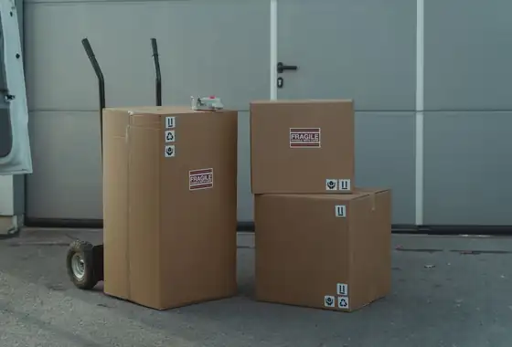
- Karton eksportowy z tektury falistejWszędzieCzęstość 5 z 5Poniżej średniejKoszt względny 2 z 5Standardowy karton zbiorczy używany w niemal każdej serii eksportowej
- Pudełko kolorowePowszechnieCzęstość 4 z 5Powyżej średniejKoszt względny 4 z 5Zadrukowane pudełko detaliczne do indeksów premium; drożej niż zwykły karton
- Zawieszka / karta nagłówkowaWszędzieCzęstość 5 z 5NiskiKoszt względny 1 z 5Tani karton do blistrów i ekspozycji na haku; niemal powszechny
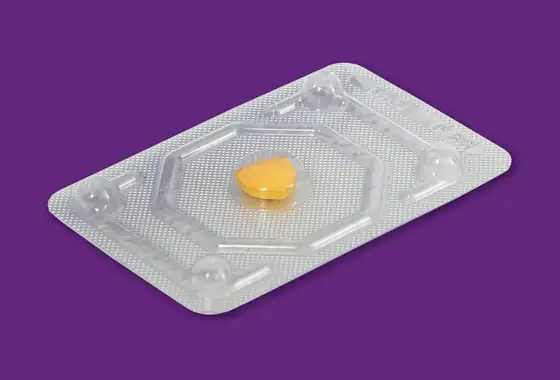
- BlisterPowszechnieCzęstość 4 z 5ŚredniKoszt względny 3 z 5Ekspozycyjne opakowanie z tworzywa i kartonu do drobnych narzędzi; pod presją regulacyjną
- Skin packSporadycznieCzęstość 2 z 5ŚredniKoszt względny 3 z 5Ekspozycja pod folią dla kształtów nieregularnych; rzadsza niż blister
- Kompozyt papieru i tworzywaCzęstoCzęstość 3 z 5Poniżej średniejKoszt względny 2 z 5Format hybrydowy ograniczający udział tworzywa; rośnie wraz z przepisami opakowaniowymi
- Folia termokurczliwaCzęstoCzęstość 3 z 5NiskiKoszt względny 1 z 5Tania owijka do łączenia wielopaków; dość powszechna, niski koszt
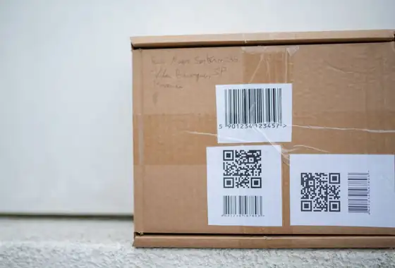
- Zestaw etykietWszędzieCzęstość 5 z 5NiskiKoszt względny 1 z 5Etykiety z kodem kreskowym i informacją o pielęgnacji; tanie, na niemal każdej sztuce
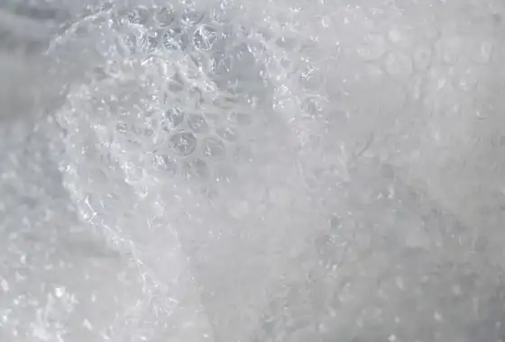
- Wypełnienie przestrzeniCzęstoCzęstość 3 z 5NiskiKoszt względny 1 z 5Wypełnienie papierowe lub piankowe dla ochrony; tanie, stosowane wybiórczo
- TaśmowanieSporadycznieCzęstość 2 z 5NiskiKoszt względny 1 z 5Spina zestawy sztuk albo palety; tanie, stosowane tylko okazjonalnie
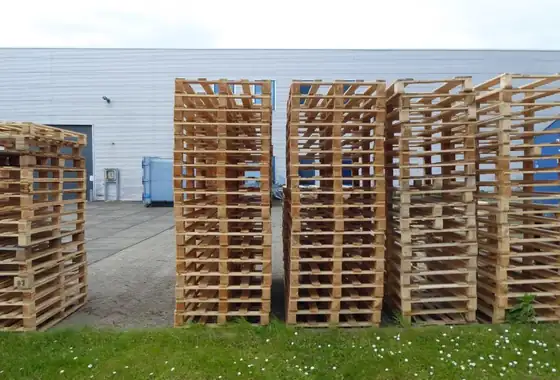
- PaletaWszędzieCzęstość 5 z 5WysokiKoszt względny 5 z 5Jednostka bazowa transportu zbiorczego; najwyższy koszt jednostkowy w grupie
9.2 Ekspozycja i prezentacja na półce
Format chroni narzędzie. Prezentacja decyduje o tym, jak się je kupuje. Jedno i drugie określa się razem, bo to prezentacja dyktuje wykrojnik, gramaturę tektury i otwór.
| Prezentacja | Co opakowanie musi udźwignąć | Gdzie wygrywa |
|---|---|---|
| Pudełko kolorowe, w którym narzędzia stoją | Wykrojony wkład dopasowany do narzędzia, dzięki czemu dwa tuziny sekatorów jadą w jednym pudełku i stoją pionowo, gdy tylko zdejmie się wieko. Liczy się rysunek wkładu, a nie pudełka | Codzienna droga na ladę: jeden karton, jeden indeks i zero pracy przy uzupełnianiu półki w sklepie |
| Pudełko kolorowe z okienkiem | Ten sam wkład plus wykrojony otwór, dzięki czemu jedno narzędzie jest widoczne i nadal w pełni zamknięte | Linie prezentowe i premium, gdzie pudełko jest częścią tego, co się kupuje |
| Pudełko ekspozycyjne z otwartym frontem | Perforowane wieko, które się odrywa i zostawia tacę, jaką sklep stawia wprost na półce | Linie gotowe na półkę — opakowanie zbiorcze jest ekspozytorem, więc nic nie jest rozpakowywane dwa razy |
| Karta nagłówkowa + otwór euro | Złożony karton z wykrojonym otworem dopasowanym do haka danej sieci | Najtańsza droga na listwę; mebel należy do sieci handlowej |
| Blister albo clamshell na haku | Formowana skorupa zgrzana albo zawinięta na zadrukowanym podkładzie | Drobne narzędzia wymagające zabezpieczenia przed kradzieżą i pełnego zadruku |
| Skin pack na kartonie | Folia obciągnięta ciasno na narzędziu plus wykrojony otwór | Pokazuje rzeczywisty kształt wyrobu przy znacznie mniejszej ilości tworzywa niż blister |
| Ekspozytor ladowy (PDQ) | Niewielka, wcześniej zapełniona taca, która przyjeżdża gotowa do postawienia na ladzie | Linie impulsowe i sezonowe dodatki |
| Ekspozytor podłogowy lub paletowy | Opakowanie transportowe, które zamienia się w wolnostojący mebel z zadrukowanym nagłówkiem | Otwarcia sezonu, gdzie wolumen uzasadnia koszt oprzyrządowania |
Zanim narysują Państwo otwór, proszę zapytać, na jakim haku to zawiśnie. Systemy listwowe, płyty perforowane i ściany lamelowe przyjmują różne haki, a otwór wykrojony pod niewłaściwy zamienia zgodne opakowanie w przepakowanie w kraju przeznaczenia. To najczęstsza późna zmiana opakowania w programie ogrodowym.
9.3 Stojaki i meble ekspozycyjne
Ekspozytorem nazywa się dwie różne rzeczy: mebel, który sieć już ma, i jednostkę, którą Państwo wysyłają. To, o którą chodzi, przesądza, kto za nią płaci i czy wyceniają Państwo opakowanie, czy mebel.
| Stojak | Trwałość | Do czego naprawdę służy |
|---|---|---|
| Stojak z drutu stalowego malowany proszkowo albo obrotowy | Lata; zwykle zwrotny | Hurtownie i sklepy z narzędziami. Pełni też rolę własnej przestrzeni marki w sklepie |
| PDQ albo ekspozytor podłogowy z tektury falistej | Jeden sezon, jednorazowy | Promocje. Jedzie na płasko, kosztuje najmniej i trafia do odpadu zamiast do zwrotu |
| Panel z płyty wiórowej albo MDF z hakami | Kilka sezonów | Centra ogrodnicze, gdzie mebel musi wyglądać jak wyposażenie sklepu, a nie jak opakowanie |
| Taca lub podest z akrylu | Długa, ale rysuje się | Premium i drobne części; najdroższy w przeliczeniu na front półki |
| Własna ściana lamelowa albo płyta perforowana sieci | Trwała, ale nie Państwa | Dostarczają Państwo opakowanie z otworem euro i nic więcej — mebel już tam stoi |
9.4 Paczka to nie półka
Opakowanie detaliczne projektuje się tak, by dało się je układać na palecie i by dobrze wyglądało w świetle sklepu. Opakowanie kurierskie projektuje się z myślą o rzucaniu. To samo pudełko rzadko robi obie te rzeczy, a opakowanie, które przeszło brief detaliczny, wciąż może polec w pierwszym miesiącu sprzedaży online.
Nazwy programów platform, progi i protokoły badań się zmieniają; proszę potraktować powyższy wiersz jako listę pytań i potwierdzić każde z nich w aktualnym podręczniku sprzedawcy lub dostawcy dla Państwa konta.
9.5 Warianty o mniejszym wpływie
Każdy konwencjonalny format ma odpowiednik o mniejszym wpływie. Dostępność zależy od opakowania, wolumenu i kraju przeznaczenia — proszę podać rynek i formę prezentacji handlowej, a wyceniamy warianty zgodne obok konwencjonalnych.
| Wariant o mniejszym wpływie | Zastępuje | Dlaczego kupujący o to proszą |
|---|---|---|
| Tektura z certyfikatem FSC / PEFC | Tektura bez certyfikatu | Podstawowy wymóg u większości dużych sieci handlowych. |
| Tektura z surowca wtórnego | Tektura z włókna pierwotnego | Pozwala zadeklarować na opakowaniu udział surowca wtórnego. |
| Jednomateriałowe opakowanie papierowe | Blister z papieru i tworzywa | Nadaje się do recyklingu bez rozdzielania materiałów przez konsumenta. |
| Blister z masy formowanej albo papieru | Blister z PET albo PVC | Główna droga do usunięcia tworzywa z opakowania detalicznego. |
| Papierowy zaczep do zawieszenia | Formowany hak z tworzywa | Pozwala uniknąć plastikowej pozycji w opakowaniu skądinąd papierowym. |
| Farba sojowa lub wodna | Farba rozpuszczalnikowa | Obniża ładunek rozpuszczalników w druku. |
| Taśma papierowa lub gumowana | Taśma pakowa PP | Cały karton trafia do jednego strumienia recyklingu. |
| Karton eksportowy bez nadruku | Karton zewnętrzny w pełnym kolorze | Najniższy koszt i najmniejszy ślad przy zwykłym eksporcie. |
| Folia z recyklingu lub rPET | Folia termokurczliwa PVC | Kompromis tam, gdzie folii naprawdę nie da się usunąć. |
| Paleta poddana obróbce cieplnej albo plastikowa | Paleta z drewna bez obróbki | Spełnia wymogi fitosanitarne ISPM 15 przy eksporcie. |
10 Certyfikaty i deklaracje
Certyfikat to dokument o zakładzie, zakresie i dacie. Proszę sprawdzić wszystkie trzy, bo ważny certyfikat wystawiony na niewłaściwy zakład nie jest wart nic.
Certyfikacja nie jest już w tej branży wyróżnikiem; jest warunkiem wejścia. Dostawców nadal odróżnia to, czy dokumentacja wytrzyma sprawdzenie: zakres obejmujący kupowany wyrób, adres zakładu zgodny z fabryką i data wciąż ważna w chwili wypłynięcia kontenera.
10.1 Co obejmuje każdy znak
| Znak | Co faktycznie poświadcza | Kto go wymaga | Co sprawdzić w dokumencie |
|---|---|---|---|
| FSC / PEFC | Łańcuch kontroli pochodzenia drewna i tektury — że śledzono certyfikowane włókno, a nie że certyfikowano drzewo | Większość dużych sieci handlowych z UE i Wielkiej Brytanii, coraz częściej także z USA | Kod CoC, rodzaj deklaracji (100%, Mix albo Recycled) oraz to, czy certyfikat obejmuje kupowaną grupę produktów |
| Przepisy UE o wylesianiu | Należyta staranność potwierdzająca, że drewno wprowadzane na rynek UE nie pochodzi z wylesiania | Ten, kto importuje do UE — zwykle Państwo, a nie fabryka | Geolokalizacja obszaru pozyskania i oświadczenie o należytej staranności; proszę potwierdzić termin wejścia w życie właściwy dla wielkości Państwa firmy |
| amfori BSCI / Sedex SMETA | Warunki pracy i zatrudnienia w konkretnym zakładzie i w konkretnym dniu | Niemal każda sieć handlowa w UE i USA | Data audytu, ocena lub ustalenia oraz to, czy audytowany adres to zakład, który wykona Państwa towar |
| ISO 9001 / ISO 14001 | Że system zarządzania jakością albo środowiskiem istnieje i jest audytowany | Niemal wszyscy kupujący branżowi, jako minimum | Zakres i zakład. Certyfikat grupowy wskazujący inną fabrykę nie jest Państwa certyfikatem |
| REACH i SVHC | Substancje ograniczone w wyrobie — uchwyty, powłoki i galwanika w tym samym stopniu co stal | Importerzy z UE | Lista badanych substancji, data badania i to, z której części narzędzia pobrano próbkę |
| CPSIA i kalifornijska Proposition 65 | Limity ołowiu i ftalanów; obowiązek ostrzeżeń | Importerzy z USA | Raport z badań oraz to, czy opakowanie wymaga ostrzeżenia w Państwa kanale sprzedaży |
| EN 388 ze znakiem CE / UKCA | Właściwości mechaniczne rękawic ochronnych | Każdy, kto sprzedaje rękawice do UE albo Wielkiej Brytanii | Jednostka notyfikowana, deklarowane poziomy skuteczności i to, czy certyfikat dotyczy właśnie tej rękawicy |
| Rejestracje EPR dla opakowań | Kto płaci za odpady opakowaniowe na każdym rynku | Niemcy, Francja, Włochy, Hiszpania i inne kraje — każdy osobno | Numery rejestracyjne wystawione na właściwy podmiot oraz oznaczenia na opakowaniu wymagane przez dany rynek |
| Brytyjski podatek od opakowań z tworzyw | Opakowania z tworzyw poniżej progu udziału surowca wtórnego | Importerzy z Wielkiej Brytanii | Dowód udziału surowca wtórnego, a nie deklaracja intencji |
| ISPM 15 | Obróbka cieplna palet drewnianych i materiału sztauerskiego | Każdy kraj przeznaczenia, dla palet drewnianych | Wypalone oznaczenie na samej palecie, w chwili załadunku |
| GS1 GTIN | Że kod kreskowy należy do właściciela marki | Cały detal | Że prefiks jest licencjonowany na markę, a nie pożyczony od dostawcy |
10.2 Jak czytać certyfikat
- Zakład, zakres, data
- Trzy pola rozstrzygają, czy certyfikat odnosi się do Państwa zamówienia. Ważny certyfikat FSC posiadany przez firmę handlową nie uprawnia fabryki do drukowania logo, a audyt społeczny zakładu siostrzanego nie mówi nic o tym, który prowadzi Państwa linię.
- Deklaracja potrzebuje łańcucha, nie logo
- Aby umieścić FSC na opakowaniu, każdy podmiot przejmujący własność certyfikowanego materiału musi mieć własny kod kontroli pochodzenia: papiernia, przetwórca i fabryka składająca opakowanie. Brakuje jednego ogniwa i deklaracji nie wolno złożyć, choćby papier był jak najbardziej certyfikowany.
- Audyty tracą ważność; produkcja nie
- Proszę zapytać, kiedy przypada kolejny audyt i co stanie się z Państwa dostawami, jeśli się on przesunie. Certyfikat wygasający w trakcie programu jest problemem handlowym, a nie papierkowym.
Od każdego dostawcy proszę żądać: samego certyfikatu, a nie logo w prezentacji, strony z zakresem oraz nazwy i adresu dokładnie w brzmieniu z dokumentu. Następnie proszę zestawić ten adres z zakładem, który Państwo odwiedzili.
11 Czego oczekuje hurtownik
Prawie wszystko, co odróżnia dostawców na tym poziomie, to nie narzędzie. To własność oprzyrządowania, dyscyplina próbek, dokumenty i to, co dzieje się, gdy coś pójdzie nie tak.
Importerzy, dystrybutorzy i grupy zakupowe w Europie i Ameryce Północnej oraz azjatyckie domy handlowe, z którymi konkurują, zbiegają się na krótkiej liście oczekiwań. Niemal nic z niej nie dotyczy produkcji. Warto powiedzieć to wprost, bo to właśnie jest tematem pierwszego spotkania.
11.1 Przed zamówieniem
11.2 Po wysyłce
Warto zapytać wcześnie: kto jest właścicielem oprzyrządowania, ile rund próbek jest bezpłatnych, czy MOQ da się łączyć w obrębie całej serii i jak długo utrzymywane są części zamienne. Cztery pytania, a odpowiedzi mówią prawie wszystko o tym, jaka będzie współpraca z danym dostawcą.
12 Gdzie specyfikacja zwykle zawodzi
Jedenaście wzorców, każdy sprowadzony do mechanizmu opisanego wcześniej na tej stronie. Przyczyna, którą dostawca potrafi nazwać, zanim wystąpi, to przyczyna, którą da się wyeliminować już na etapie projektu.
Żaden z poniższych wzorców nie dotyczy konkretnego klienta — nic na tej stronie nie dotyczy. Każdy jest w branży na tyle powszechny, że ma własną nazwę, i każdy sprowadza się do mechanizmu opisanego już wcześniej na tej stronie: górna granica twardości zamiast przedziału, połączenie, którego nie da się ponownie napiąć, otwór wykrojony pod niewłaściwy hak. Zestawienie przyczyny obok rozwiązania zwykle wystarczy, by ocenić, czy dostawca widział już dany wzorzec, czy spotyka go po raz pierwszy w Państwa kontenerze.
12.1 Materiały i obróbka cieplna
| Co widzi kupujący | Gdzie to naprawdę się zaczyna | Co z tym robimy |
|---|---|---|
| Partia, która przeszła kontrolę wyrywkową, i tak pękała w terenie | Specyfikacja podawała górną granicę twardości zamiast przedziału, a pobrane sztuki trafiły akurat w samą jej górę — dokładnie tam, gdzie kończy się udarność | Każda wartość twardości w specyfikacji Birdland to przedział z dolną i górną granicą naraz, z powodów wyłożonych w części Jak psuje się narzędzie |
| „Ulepszenie na nierdzewkę”, które wyglądało na darmową poprawę, tępi się teraz szybciej niż stal, którą zastąpiło | Gatunek hartowalny zamieniono na taki, którego nie da się zahartować do tego samego poziomu — odporność na korozję kupiono kosztem utrzymania ostrza, którego nikt nie wycenił | Ten kompromis wyceniamy i wyjaśniamy, a nie podajemy jako darmowe ulepszenie — zob. zasadę „nierdzewka to kompromis” w części Jak psuje się narzędzie |
| Trzonek, który na próbce uginał się prawidłowo, po jednym ciężkim sezonie odkształca się trwale | Stop aluminium wskazano bez stanu umocnienia albo rdzeń z napełniaczem szklanym dobrano wyłącznie pod kątem sztywności | Stan umocnienia i udział szkła są określane razem ze stopem, jak opisano w części Jak psuje się narzędzie, a nie pozostawione domyślnym ustawieniom huty czy przetwórcy tworzyw |
12.2 Połączenia i elementy złączne
| Co widzi kupujący | Gdzie to naprawdę się zaczyna | Co z tym robimy |
|---|---|---|
| Złącze drążka teleskopowego, które pierwszego dnia obracało się swobodnie, po jednym sezonie nad morzem zatarło się całkowicie | Nierdzewny element złączny przeprowadzono bezpośrednio przez rurę aluminiową — powstało małe ogniwo, w którym anodą jest aluminium | Element złączny jest odizolowany od aluminium tulejką nylonową albo dobraną powłoką jeszcze przed wysyłką, zgodnie z częścią Nakrętki, śruby i połączenie |
| Sekator, który wciąż dobrze się ostrzy, jest teraz niebezpiecznie luźny na osi i nie ma już czego dokręcić | Połączenie zanitowano zamiast skręcić śrubą — taniej o kilka centów i zarazem decyzja o całym okresie użytkowania narzędzia | Nit wskazujemy tylko tam, gdzie od narzędzia nie oczekuje się żadnego serwisu; wszystko, co sprzedaje się jako naprawialne, dostaje połączenie dające się ponownie napiąć, jak wyjaśniono w części Nakrętki, śruby i połączenie |
| Nakrętka samohamowna, która wytrzymała pierwsze kilka ostrzeń, teraz odkręca się sama | Wkładka nylonowa jest materiałem eksploatacyjnym — trzyma dzięki temu, że ulega odkształceniu, i przy każdym zdjęciu oddaje trochę siły trzymania | Tam, gdzie narzędzie ma być rozbierane do ostrzenia co sezon, wskazujemy zamiast niej nakrętkę samohamowną całkowicie metalową, zgodnie z częścią Nakrętki, śruby i połączenie |
12.3 Opakowania i zgodność
| Co widzi kupujący | Gdzie to naprawdę się zaczyna | Co z tym robimy |
|---|---|---|
| Opakowanie, które na próbce wyglądało poprawnie, zostaje odrzucone przy przyjęciu towaru u samej sieci | Otwór wykrojono pod listwę euro, a mebel sieci to płyta perforowana — albo odwrotnie | Hak albo mebel potwierdza się przed narysowaniem wykrojnika, jak opisano w części Opakowania, a nie po nim |
| Dostawa, która przeszła kontrolę detaliczną, dociera uszkodzona po pierwszym miesiącu sprzedaży online | Opakowanie detaliczne wykorzystano ponownie do wysyłki kurierskiej bez własnej próby zrzutu — opakowanie detaliczne buduje się do układania w stos, a kurierskie do rzucania | Opakowanie przeznaczone do sieci kurierskiej badamy według protokołu tej sieci, osobno od jego briefu detalicznego, zgodnie z częścią Opakowania |
| Certyfikat pokazany na spotkaniu handlowym nie przechodzi audytu celnego ani audytu sieci | Adres zakładu, zakres albo rodzaj deklaracji w certyfikacie nie zgadzał się z fabryką albo wyrobem, który faktycznie jedzie | Zakład, zakres i datę sprawdzamy względem fabryki, zanim na opakowaniu pojawi się jakakolwiek deklaracja, jak opisano w części Certyfikaty i deklaracje |
12.4 Kwestie handlowe i harmonogram
| Co widzi kupujący | Gdzie to naprawdę się zaczyna | Co z tym robimy |
|---|---|---|
| Seria, która na papierze wyglądała wykonalnie, wycenia się jako dwadzieścia cztery odrębne minima | MOQ wyceniono dla każdej pozycji z osobna, zamiast połączyć je w obrębie całej serii | Serię wyceniamy — i tam, gdzie to możliwe, produkujemy — jako jedną pulę, a nie jako odrębne minima, zgodnie z częścią Czego oczekuje hurtownik |
| Zamówienie złożone w poczuciu, że jest jeszcze dużo czasu, i tak nie trafia w wiosenne okno wysyłkowe | Narzędzia ogrodowe mają jeden szczyt sezonu po każdej stronie równika, a oprzyrządowania ani materiału o długim terminie dostawy nie da się ścisnąć tylko dlatego, że zamówienie przyszło późno | Oprzyrządowanie i materiał masowy na dany sezon planujemy z wyprzedzeniem wobec szczytu, który go sprzeda, a nie w jego trakcie |
13 Struktura kosztu
Cena z dostawą na miejsce to cztery bloki. Większość negocjacji porusza tylko pierwszy, a dwa ostatnie są zwykle większe.
Cena z dostawą na miejsce to cztery bloki, a nie jedna liczba. Większość rozmów zakupowych porusza tylko pierwszy z nich; w programie narzędzia ręcznego dwa ostatnie bywają większe niż oszczędność negocjowana na pierwszym.
Proszę policzyć to po swojemu: narzędzie do landed cost (całkowitego kosztu dostarczenia) w AsiaSource korzysta z tych samych czterech bloków, z już wczytanymi bieżącymi odczytami materiałów i frachtu.
14 Zobacz też
Dokąd dalej i czego ta strona celowo nie zawiera.
- AsiaSource — bieżące odczyty materiałów, frachtu i ceł oraz przywołane wyżej narzędzie do landed cost.
- ABrief — codzienny przegląd branżowy stojący za tymi odczytami.
- O nas — zasada poufności rządząca tym, co pojawia się na tej stronie.
- Kontakt — aby omówić ścieżkę produkcji na tle rzeczywistej specyfikacji.
Diagramy na tej stronie są ilustracjami schematycznymi wykonanymi dla objaśnienia. Opisy procesów i materiałów odzwierciedlają ogólną praktykę branżową; ścieżki dostępne dla konkretnego programu zależą od części, wolumenu i pochodzenia. Oba wskaźniki są ocenami porządkowymi dotyczącymi europejskiego i północnoamerykańskiego kanału detalicznego DIY, a nie zmierzonymi danymi rynkowymi.